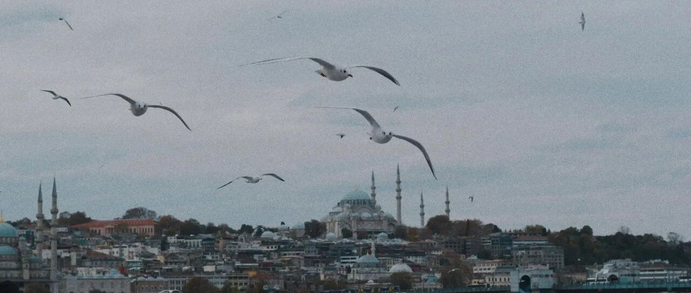

主力回来了~
圣诞节后到元旦后两个交易日，是美股大多数职业经理人休假的时间。
昨晚是他们休假回来后美股的第一个交易日，盘前及刚开盘前两三个小时，涨势如虹。
看了一下，前些交易日逢低买入的，现在账面浮盈大多会相当不错:
纳指和标普大幅度拉涨，纳指盘中一度突破2万点，标普盘中一度突破6000点，最终尾盘双双回落，收盘时纳指涨幅1.24%，标普涨幅0.55%；
大饼大涨，突破10.2万美元。作为大饼“影子股”的MSTR，一扫前几个交易日的萎靡，截至收盘大涨11.61%，收盘价379美元。
盘尾一度突破382美元，我设置的380.5美元减仓50%，1.45万股成功卖出，另外一半设置了385减仓。
如果385顺利减仓，那MSTR四次做波段套利，一共会有830万+美元。
这几次波段套利，每次操作的买入价，预期卖出价，我大多提前写得很详细。
台积电大涨5.46%，站上220美元。我原计划220美元再减仓10%，把成本降低到50美元以内。
我原本预期是这个月中旬，台积电财报后会突破220，那时再减仓，结果现在提前到来了。所以目前的安排是225减仓5%，232减仓5%，这样比较妥当。
英伟达涨了3.43%，收盘价149.4美元。盘中一度突破152美元，再创新高。
这次半导体板块大涨，主要跟三个方面有关:一个是预计今年的芯片需求仍将旺盛，一个是这个月中旬的财报预期会很不错，另一个是对黄仁勋即将开始的2025CES有高期待。
AMD涨了3.33%，收盘价129.55美元。我在AMD买入价上操作失误，记错了买入价导致设置时从139开始买入，最后成本129+。
现在也回本了，预计在165-170左右，我会减仓一部分，把成本做到100以内。不过AMD本来就是买来给英伟达做备胎的，防御用，所以涨跌并不是那么在意，但看到回本，心情还是很不一样。
Meta涨了4.23%，收盘价630美元。前几个交易日，Meta还一度出现586以下的低点。
这个我写过，Meta的两个点位，一个是595，一个是585，前些如果被破，会迅速落到585区间，这两个都是可以捡的价格。
谷歌C涨了2.5%，收盘价197.96美元。谷歌在189-191区间有个支撑点位，破了这个，会往182-185区间去。
微软涨了1%，收盘价427.85美元；亚马逊涨了1.53%，收盘价227.61美元。这两个等这个月中旬的财报发布，预计数据会相当不错。
前两天的更新中说过，苹果和特斯拉是我觉得贵的两个，这两个这几天也和预期的一致，价格开始回落。
如果苹果出现220左右的价格，才会考虑用新账户捞点；特斯拉，太妖了，再看看走势，谋定而后动。
以上这些，我个人账户持仓的个股和指数大多走得很不错。
可口可乐跌了1.52%，收盘价60.81美元。我预计会在55美元左右买入，给家庭账户做个补充和平衡，结果和VISA一样，都设置了好久，一直没机会，继续等。
消费板块的宝洁，跌了2.74%；生物医药板块的礼来、诺和诺德，分别跌了2.16%和2.99%，生物医药板块的低迷扔在持续。
联合健康目前513.67美元，在510-515区间筑底，后续再慢慢修复。
今年的操作预计不会多，就是震荡期时做一些逢低买入，然后逢高减仓的操作，做一些波段套利，整体仍以中长期持有为主。
波段套利这种，我选择的主要是MSTR，没有什么难度，低点做多，高点做空，套利很不错，预计套利1000万刀我就收手不干，再一两次的事。
… …
昨天傍晚我陪孩子们散完步回家，我小儿子问我:爸爸，我们家是不是很有钱？
我大儿子立马把他拉到一旁坐下，告诉他:
家里再有钱，也不能对外说，不然别人没钱养家了，铤而走险盯上你，你觉得会发生什么事？
小儿子说:会找我要钱，不给就会打我。
老大告诉他:会抓走你，然后找爸妈要钱，也就是绑架。但你想啊，就算他们拿到了钱，你知道他们长什么样，他们放你回来，回头你去报警，他们就被抓了，他们还会放你回来吗？
小儿子:知道了，在外不能说自己家有钱，自己心里知道就好，不然有危险。
老大:能伤害你的，都是了解你情况的人，特别是熟人。再说了，我们自己会赚钱，关心家里有多少钱干嘛？
我和我媳妇在一旁听得想笑，老大从我们创业期开始一直陪在身边，整体更成熟稳重得体。
我们家从来没告诉过孩子，家里具体有多少钱，但都会让他们知道家里是不缺钱的。
平时会把他们的零花钱和红包等，都放到账户上去理财，以美股为主，在投资中做教育，理论和实践结合，效果很不错，这部分内容我写过。
随着这两年买美股的收益颇丰，他们各自的账户金额也都突破了七位数。有成就感的同时，也培养了投资和风险控制的基础能力。
他们在这个过程中，知道父母是有赚钱能力的，因此对家里具体有多少钱，一直都不太感冒。
随着他们投资能力的成长，对金钱观念的塑造完成，在这个过程中也逐步会了解家里的情况，或许到16岁时，知道具体有多少钱，已经很适应。这点在我大儿子身上已经很明显。
只是我在这个过程中，选择了让他们通过投资这个过程，逐步了解到家里的情况，这样才能让他们正确衡量金钱和自己的价值。
因此，我经常会让孩子参与到家庭的计划中来，每年开个家庭会。做上一年的总结，表扬他们在过去一年取得的进步，以及家庭大致取得的成就，并规划来年各自的目标。
也会带他们去夜市体验做小买卖，去公司看规范化作业……让孩子知道钱是怎么来的。
这些以前有写过。
整体来说，一定要抓住时机，在孩子主动产生兴趣的时候进行积极沟通，抓住机会。主动灌输给孩子，他们往往没兴趣听。
不会对他们刻意隐瞒家庭情况，或告诉他们家里穷，觉得那会在孩子的心里注入自卑和怯懦。不做这种所谓的苦难教育。
最基本的教育，是实事求是。因此要让孩子认清楚，事实到底是什么样的。
再说，这是世界观的培养，啥都不告诉，孩子怎么能清楚认识这个世界？
只不过，采用循序渐进的方式，整体效果会好很多，在潜移默化中，已经让孩子在成长的过程中，逐步了解到了家庭的经济情况。
就这样吧。